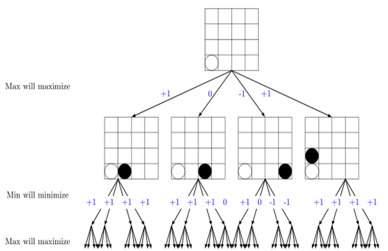

Serial Implementation
A common and effective algorithm for making decisions in a two-player, zero-sum game is the minimax algorithm, which computes some heuristic value assigned to each state of the game indicating how good it would be (relatively) for a player to have that position. Then, we can arrange these states into a game tree, with each branch representing a possible move and the children representing possible game states after some number of turns of the game. Following is an example of a minimax tree:

We implemented this game tree and the minimax algorithm in serial, with the following heuristic for determining value of game states. At the time each piece is played, we efficiently update the number of 1-in-a-row's, 2-in-a-row's, 3-in-a-row's, 4-in-a-row's, and 5-in-a-row's which each player has. We then tune two vectors of weights: offensive and defensive weights. The dot product of these weight vectors and the vector of number of stones in a row for each player produce an offensive score and defensive score, and the difference is the net score for the AI agent. The serial minimax tree attempts to maximize this score assuming that the opponent will attempt to minimize this score, and so on and so forth, to a certain level of depth in the game tree.
A serial improvement which can be made is that of alpha-beta pruning, where two constants alpha and beta essentially represent the lower and upper bounds on values that still need to be considered at a certain point during evaluation of the minimax tree. Certain branches of the tree may not need to be considered, since one knows that the next player will attempt to minimize the score of his move and that the player himself will attempt to maximize the score of those moves afterwards.